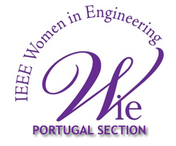

Olá Porto!
A segunda edição do Rails Girls está a chegar! Junta-te a nós neste evento gratuito onde vais criar uma aplicação web em Ruby on Rails!
Welcome to the second edition of Rails Girls Porto! Let's build a Ruby on Rails web app! Join us in this wonderful and free event!
APPLY NOW! The first round is until the 20th May and the second round until the 29th. The sooner, the better!
You learn designing, prototyping and coding with the help from our coaches.
You need your own laptop, curiosity and a sprinkle of imagination!
Want to help? We are looking for volunteers and Rails coaches. Email us.
| 18.00-21.00 |
Installation partyGet to know the attendees a little bit before hand. Bring your laptop if you can, so we can install Ruby on Rails for you.Where: UPTEC, Parque de Ciência e Tecnologia da Universidade do Porto |
|---|---|
| 21.00 - |
Coach dinnerAll of the coaches are welcome to our coach dinner, where we'll go through the program for the next day. More news about this soon. |
| 9:00 - 10:00 |
Registration and breakfast.Some warming up before the workshop. |
|---|---|
| 10:00 - 10:15 |
WelcomeOutline of the day & word from sponsors |
| 10:20 - 10:45 |
WORKSHOPHow to design a web app |
| 10:50 - 11:10 |
Tryruby.orgLet's get coding! |
| 11:10 - 13:00 |
WORKSHOPJumpstart your first web application |
| 13:00 - 14:00 | Lunch |
| 14:10 - 14:30 |
WORKSHOPBento Box: Recap of what we’ve learned and how it all fits together. |
| 14:30 - 16:30 |
Hands on the app. |
| 16:30 - 17:00 | Coffee break and lightning talk. |
| 17:00 - 19:00 |
WORKSHOPExtend your application. |
| 19:30 - 21:30 |
Portugal Geekettes MeetupOpen for everyone, meet other cool people interested in tech! |
Rails Girls Porto
30th and 31st May
It will take place at UPTEC TECH. To get there check below.
Applications
First round: 1st to 25th May
Second round: 25th to 29th May
Acceptances informed during the following weeks.
Applications until the 25th May are valid to the second round.
Rails Girls Porto is co-organized with our awesome partners.
Want to help? We're looking for partners and sponsors for the event! Email us!
UPTEC is a Center for Business Innovation and a Incubator in the sectors of Technology, Creative Industries, Sea Technology and Biotechnology from Porto University.

Portugal Geekettes is a organization focused on empower women in tech, with tools, resources and a worldwide network.

Women in Technology is the biggest professional and international organization dedicated to promote women in engineering and science.

Girls Lean In is a community that aims to bring together the women entrepreneurs of Braga and the World.
How much does the workshop cost? Nothing, it's free! You just need to be excited and prepared to learn a lot and work hard!
Who is this aimed for? Women of any age with basic knowledge of working with a computer. We’ve had people of all ages taking part. The event will be in Portuguese, but English translators will be available. Please bring your laptop.
Can men attend? Yes, but girls are given a priority.
I know how to program - How can I help? We’re also looking for people to be coaches. We’ll have a two-three hour workshop before the event to walk you through the curriculum. Email us
 Ana Sofia Pinho, organizer
@anasofiapinho
Ana Sofia Pinho, organizer
@anasofiapinho
 Pedro Gaspar, organizer and coach
@pedrogaspar
Ana Gonçalves, organizer and coach
@sbg_ana
Emanuel Mota, coach
LinkedIn
José Mota, coach
@josemotanet
Pedro Chambino, coach
@p_chambino
Ricardo Mendes, coach
@locks
Rui Salgado, coach
@ruisalgado
David Francisco, coach
@dmfrancisco
Bernardo Raposo, coach
@braposo
Fred Oliveira, coach
@f
Maxim Lapis, coach
LinkedIn
Pedro Gaspar, organizer and coach
@pedrogaspar
Ana Gonçalves, organizer and coach
@sbg_ana
Emanuel Mota, coach
LinkedIn
José Mota, coach
@josemotanet
Pedro Chambino, coach
@p_chambino
Ricardo Mendes, coach
@locks
Rui Salgado, coach
@ruisalgado
David Francisco, coach
@dmfrancisco
Bernardo Raposo, coach
@braposo
Fred Oliveira, coach
@f
Maxim Lapis, coach
LinkedIn
Rails Girls Porto changed location!
It's going to be at the Auditorium of UPTEC PINC.
Polo das Indústrias Criativas do UPTEC
Praça Coronel Pacheco, 2
4050-453 Porto
Here are the GPS coordinates: 41.151381, -8.615384
You can also check it on Google Maps.
Should you get lost or stuck, dial 00351 910 444 710. This should connect you to an organizer or coach that will try to help you get there.